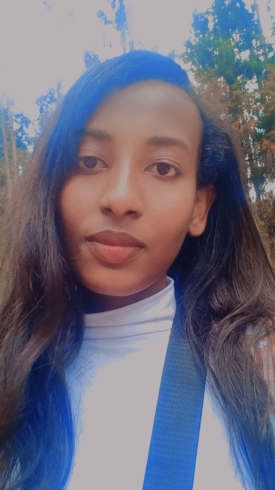

About me
Hello! My name is Nuhamin Emenebered. I was born in Jeweha Town, a place filled with cherished childhood memories. Growing up in this vibrant community, I developed a deep appreciation for the simplicity and beauty of life. My journey took me through various experiences and adventures in different places. I spent my early years in Ataye, where I learned valuable life lessons that have shaped my values and outlook on life. Eventually, I moved to Shewarobit, where I completed my secondary education. Outside of my academic pursuits, I'm deeply passionate about technology and innovation. I enjoy exploring new ideas and finding creative solutions to challenges. In my free time, I love connecting with people, sharing stories, and learning about different cultures.

Acadamic background

Hobbies
In my free time, I immerse myself in music. Reading is another passion of mine, especially when it involves stimulating mind games and puzzles that keep my brain sharp. Watching football matches is a thrilling way to spend an evening, cheering for my favorite teams and experiencing the highs and lows of the game. These hobbies provide a perfect balance of relaxation, mental exercise, and excitement in my life.
Future Aspiration
Looking ahead, My goal is to contribute to innovative projects that enhance technology's impact on society, whether through developing intelligent systems, improving machine learning algorithms, or creating user-friendly AI applications. I am eager to apply my knowledge and skills in real-world scenarios and contribute positively to my field.